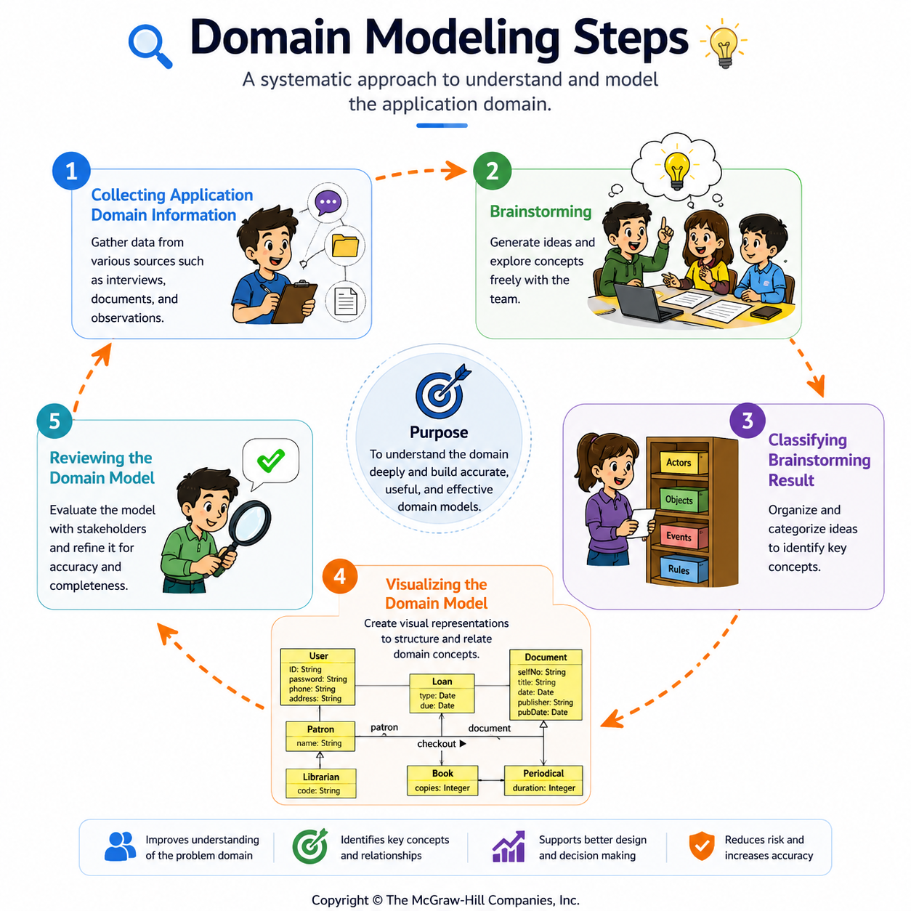
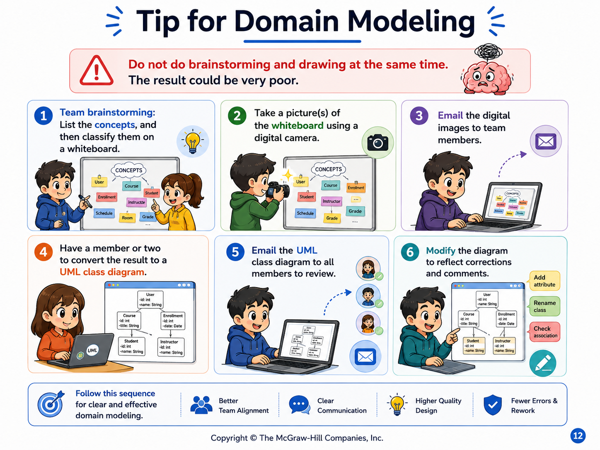

The Five-Step Domain Modeling Process
Move from domain information to a reviewed UML class diagram without mixing discovery and drawing too early.
Apply the lecture’s five-step workflow and distinguish domain discovery from UML visualization.
Five steps from reality to a domain model
Collect information about the application domain.
List candidate concepts and relevant domain knowledge.
Organize and classify the brainstorming results.
Represent the domain model using a UML class diagram.
Inspect the model, obtain feedback, and correct it.
See the complete workflow as one mental model

The important boundary is between discovering domain knowledge and drawing UML. UML is the visualization step, not the brainstorming method.
Do not brainstorm and draw at the same time
The lecture explicitly warns that mixing brainstorming with diagram drawing can produce poor results. A practical team workflow is:
- List domain concepts and classify them on a whiteboard.
- Capture the brainstorming result so the team retains the raw domain knowledge.
- Have one or two members convert the classified result into a UML class diagram.
- Circulate the diagram to the team for review.
- Modify the model to reflect corrections and comments.

Discover → classify → visualize → review. Do not let UML notation control the brainstorming session.